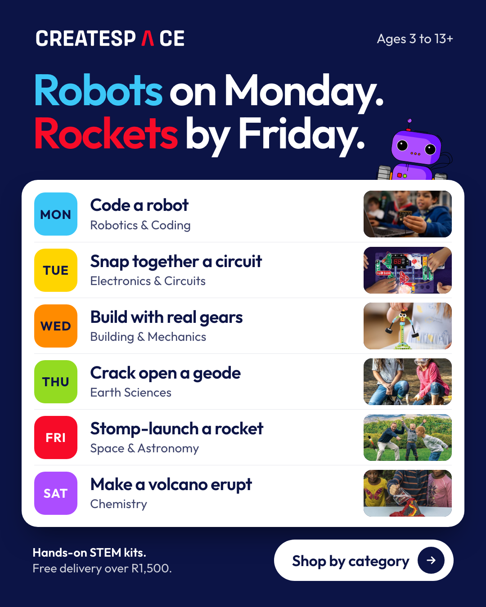
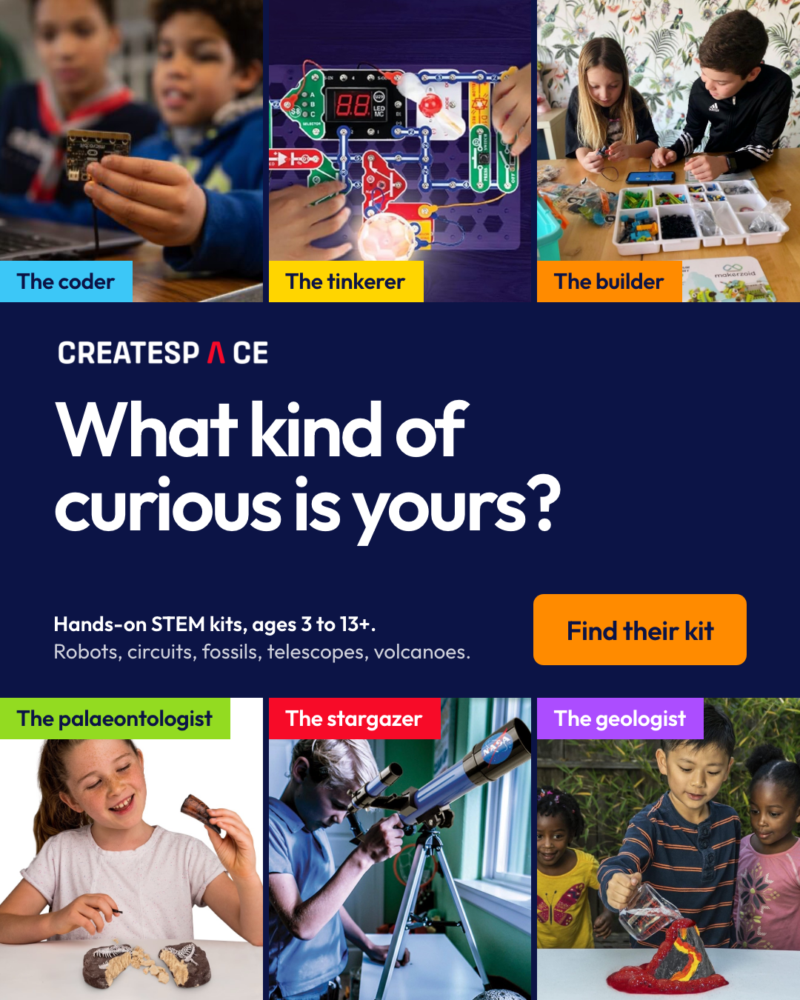
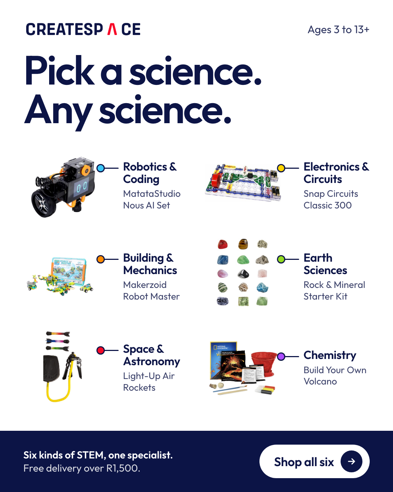

Activity-led. One hands-on thing per day, Monday to Saturday.
Download PNG
Child-led. The parent spots their own kid in one of six types.
Download PNG
Product-led. Six real kits laid out and labelled.
Download PNG